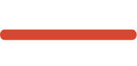

Trading asset. Trading asset on which the vfxAlert signal appeared.
About vfxAlert signals
vfxAlert is an application developed for binary options trading. This application provides the signals that a trader can use for his strategy. The application is designed both for beginners who are just starting their own trading career and for professionals to confirm their strategy and become a useful tool for binary options trading. There are two ways of working with this application:
create your own strategy using the signals supplied by this application
use an adaptive algorithm for signal confirmation according to an already existing strategy.
Signal structure
To work with signals correctly, you need to understand their structure. The
signal looks like this.


1.
2.
Price. Quote when the signal has appeared.
3.
Time. Time since the appearance of the signal.
4.
Expiration. Recommended time of option’s expiration.
5.
Algorithm. Algorithm used for the signal’s searching;
6.
Signal. Option type — CALL (buy)/PUT (sell).
7.
Power. Signal power. The percentage of profitable tradesbased on the current indicator data. Signal power displays data for a trading asset (indicator 1) for one timeframe.
8.
Heatmap. Heatmap. Power of the current trend or reversal. Determined by statistics and indicators for the current timeframe. Displays data for indicator 2 in one timeframe.
Power & Heatmaps -
it is a statistical data of successfully completed signals. Power shows
statistical
data for current indicator №1 value by one timeframe.



Heatmaps show data for current indicator №2 value on each timeframe.
To calculated statistics data we use completed signals from our database. We can see how indicator’s values in different trading sessions influence signals winning percent.
To make a decision, you should analyze the signal strength and heat maps. For the analysis of heat maps, it is sufficient to analyze the values of the nearest periods relative to the expiration time of the signal. For an expiration time of 1 minute — analyze the values on M1 M5 — necessarily, M15 — desirable. M30, H1, H4 — can be ignored.
For expiration time 5 — analyze M5, M15, M30 — necessarily, M1, H1, H4 — can be ignored, and so on.
Indicators
Signals are generated based on data from four standard technical analysis indicators. They are included in the basic set of all popular trading terminals.
Moving Average (MA)
The task of this indicator is to remove the market «noise» as much as possible and to show the actual direction of the trend. The indicator line is a dynamic support/resistance level, which can be used to determine not only the opening point of the option but also the approximate expiration term. They are considered one of the determinants of the price direction for all trading assets, including cryptocurrencies. When the price moves above the MA, the trend is considered ascending, respectively, if it is lower, then it is a downtrend. When the market moves sideways, the indicator line goes horizontally.

Parabolic SAR (P-SAR)
A trend indicator designed to identify trend reversal points. Parabolic SAR follows a strong trend, even if there are local pullbacks and corrections. Farther the indicator points are from the price, the stronger is the movement and the fewer are the false signals. Thus, the closer to the price chart, the faster the reversal will occur.

Commodity Channel Index (CCI)
It is used on any assets to determine the beginning and end of a trend in terms of time and amplitude.

Relative Strength Index (RSI)
The task of this oscillator is to find the moment when it is necessary, if possible, to close the current trades and start looking for entry points into a new trend. Its algorithm calculates the percentage for a specified number of periods between «long» buy price bars and «short» sell price bars. In other words, overbought/oversold periods are found.

Signal algorithms
All signals function according to certain algorithms.
The vfxAlert application has two types of algorithms — trending and reversal.
Trending algorithm. The first strategy is based on CCI. Trading is carried out at the intersection of the zero level: from bottom to top for an up option (CALL) and from top to bottom for a down option (PUT). An obligatory condition for the appearance of a signal: before opening a trade, the previous 7 CCI values must be below the zero level for the CALL-option and above for the PUT (see figure). The signal power increases if the indicator leaves the +/- 100 zones during this interval.
Regardless of the signal's work, it is necessary to monitor changes in the dynamics of market volumes, including peak ones. In combination with CCI, they can give leading signals. The second strategy is based on the Simple Moving Average, the signals will be at the classic intersection points «fast» and «slow» SMA. In the figure, there is a starting point of an uptrend and you can open a CALL-option, respectively, for PUT-option the opposite conditions — the red «fast» crosses the blue «slow» from top to bottom. The signal power increases if there is an intersection on several timeframes.
Reversal algorithm. It is necessary to find a trend reversal using RSI and Parabolic SAR. It is recommended for beginners to start with reversal strategies since here the market does not just make corrections and rollbacks, at which “false intersections” of the Moving Average may occur, but actually reverses and a more reliable signal appears.
The first strategy uses P-SAR with standard settings and working out: points move below the price chart, look for an entry point for CALL-option, open PUT-option above.
The second is also a "classic" RSI. Exit from the oversold zone and an upward movement of the indicator will be a signal for CALL-option, opposite conditions (from overbought and down) are for PUT-option. To confirm the signal, you can additionally put an indicator with numerous periods on the chart in the binary trading platform, for example (12) and standard (14). Then the "faster" vfxAlert will stay ahead, and the trader then makes the final decision on the rest of the RSI.
An obligatory condition for the appearance of a signal: before opening a trade for both strategies, 7 previous values must be on the opposite side of the chart for P-SAR (see figure) and above/below overbought/oversold zones for RSI. Both types of strategies work best on trends. With a sideways movement (flat), the indicators begin to work unstably, so the RSI gets stuck in its extreme zones, the P-SAR quickly changes position. This leads to an increase in false signals. Before opening a trade, you should always look at the chart and make sure that there is a trend or reversal!
Algorithm. If you are already using the indicator from the list in your strategy, it might be better not to duplicate the information and use the rest as additional confirmation;
Power. Scalpers can trade all opportunities, while more "moderate" traders are better off leaving only the strongest signals;

Expiration or option period. Periods of 1, 5, 15 and 60 minutes are available.
The next group of settings will be «Dashboards» where you can select three assets for which extended information is displayed in the lower panel of the program:
Expiration. Data on specific terms of the option;
Pivot Points. Along with Fibonacci, one of the most popular price levels, the breakout of which confirms the continuation of the trend, and the rebound confirms the reversal. The levels are recalculated at the beginning of the trading day and then do not change.
Summary. Information on the current market sentiment in the form of a «heat» scale. The more the balance of power shifts towards sellers and buyers, the «warmer» the corresponding part of the indicator: green for BUY, red for SELL.
Volatility. Current market activity — the higher it is, the greater the likelihood of frequent price reversals, on which binary options work well.
Also poeple ask
Where I can find examples of signals?
Read this article to find examples of signals https://vfxalert.com/en/site/docs3#signal_example. Here you will see the description of different signals and the recommendation for further actions.
How to confirm the strategy with the signal?
If you want to confirm your strategy with the signal, read our article https://blog.vfxalert.com/en/admin/blog/post/1034/preview. Here you will find the information about different types of signals and indicators that helps to confirm the strategy. Use these indicators and try different types of strategies. If you want to know more about the indicators described in the article, read our blog. There are many posts about other strategies and indicators.
Do vfxAlert signals work in my country?
Yes, vfxAlert signals work in any country. We are an international company that aims to be available for traders from over the world. If you want to check the work of signals, open the Free account, run the application and you will see, how the signals appear in your browser window.
Do you guarantee the results?
vfxAlert does not offer trading strategies. vfxAlert offers signals and real-time statistics depending on current indicators values. Signals are not a recommendation for action. Signals are the result of market analysis on a particular algorithm, a trader has to understand how signals are formed, and what is current market tendencies to make the right decision.
How to choose the broker?
If you want to know how to choose the broker’s platform, read our article https://blog.vfxalert.com/en/t/how-to-choose-a-binary-options-broker. Here you will find the information about the main criteria according to which it is necessary to select the broker. You can choose one of the basic brokers which are presented in the Free account of vfxAlert. Also, you can add the local broker from your country.
How to choose the trading strategy?
Each trader needs to develop his own trading strategy. Read our article to know why it is important to develop the trading strategy https://blog.vfxalert.com/en/t/trading-strategy. Read other materials from our blog concerning different strategies and choose one of the described there. Basing on the strategies describe there you can develop your own technique to trade.